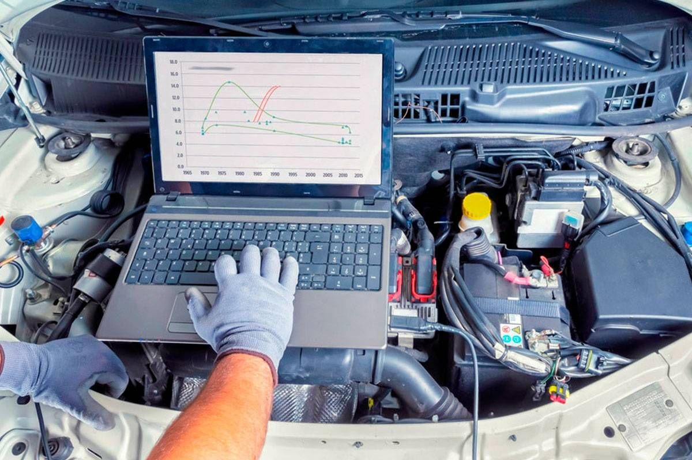
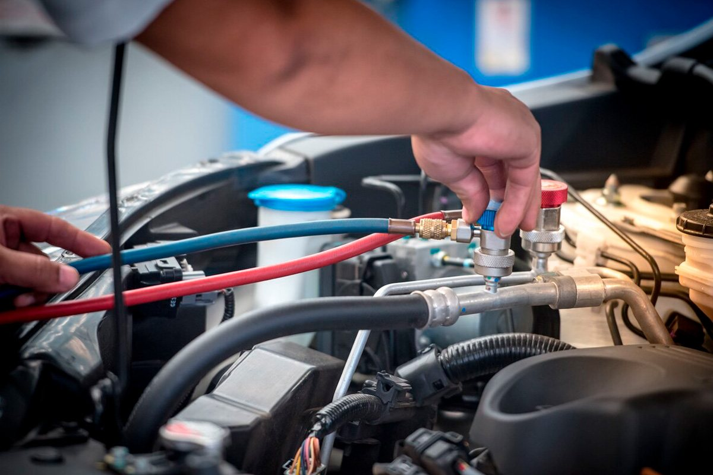
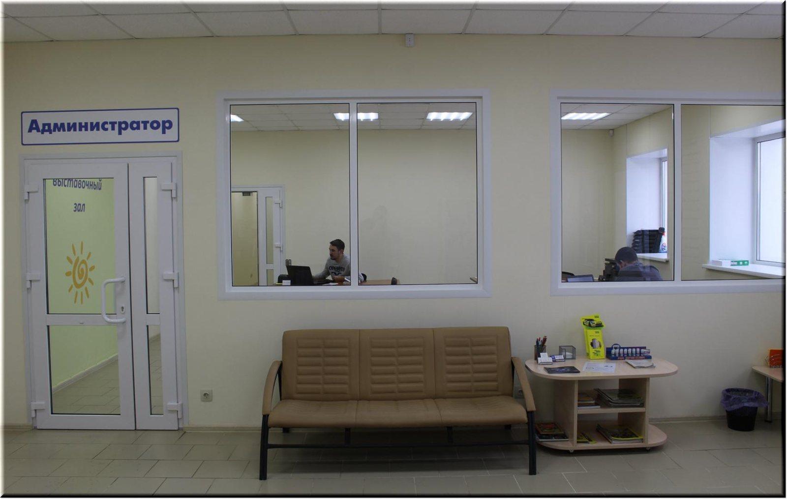
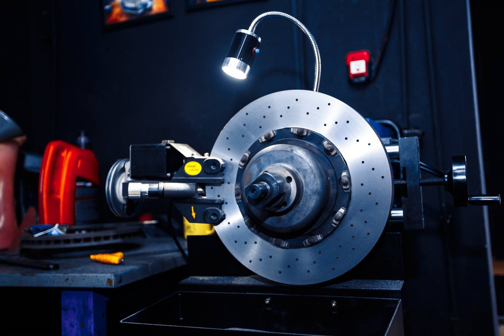
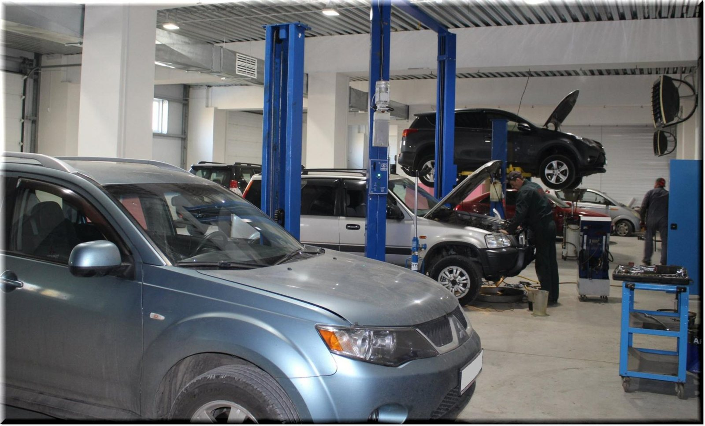

Автотехцентр АвтоУют · Красноярск
АвтоУют.
Диагностика, техобслуживание и ремонт легковых автомобилей.
Более 75 000 выполненных ремонтов · работаем с 2013 года
Цель нашей компании — профессиональный и быстрый сервис для вас. Специализация — ремонт и обслуживание легковых автомобилей в Красноярске.
Услуги
Заглянем
в машину.
Шиномонтаж
Переобувка, балансировка, сезонное хранение шин и устранение проколов.
Проточка дисков
Возвращаем рабочую поверхность тормозного диска на станке.
Ходовая часть
Ремонт и замена узлов и агрегатов, регулировка развал-схождения.
Победитель Премии 2GIS 2017, 2018, 2019.
Как начать
Позвоните
или напишите.
Расскажете, что с машиной, — подскажем, с чего начать. На связи Telegram и WhatsApp.
Здравствуйте! Опишите, что с машиной, и приезжайте на осмотр.

Диагностику ходовой части делаем на подъёмнике по 79 параметрам: подвеска, рулевое управление, тормоза.
Диагностическая карта остаётся у вас: в ней состояние всех систем машины.

Сроки ремонта — 1-2 дня, кроме двигателя и рулевых реек. Запчасти привозим от 1-го рабочего дня.
Запишитесь по телефону +7 (391) 205-30-20. Заявку можно оставить прямо здесь.
Вежливый сервис,
понимающий Вас с полуслова.

Более 75 000 выполненных ремонтов и 6 500 постоянных клиентов.
Компания работает с 2013 года. Сотни положительных отзывов на Флампе.

От 5 дней до 2 лет на все работы. Заказ-наряд с перечнем работ и материалов выдаём на руки.

Отзывы о нас — на Флампе, 2ГИС и Яндексе.
Запись
Запишитесь
на сервис.
Скидка: 25% на работы от 300 т. руб.